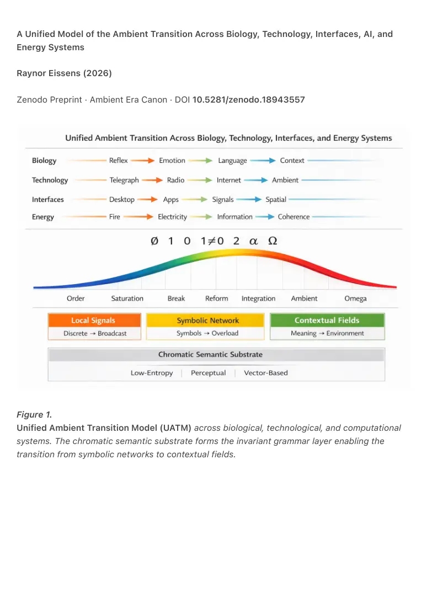
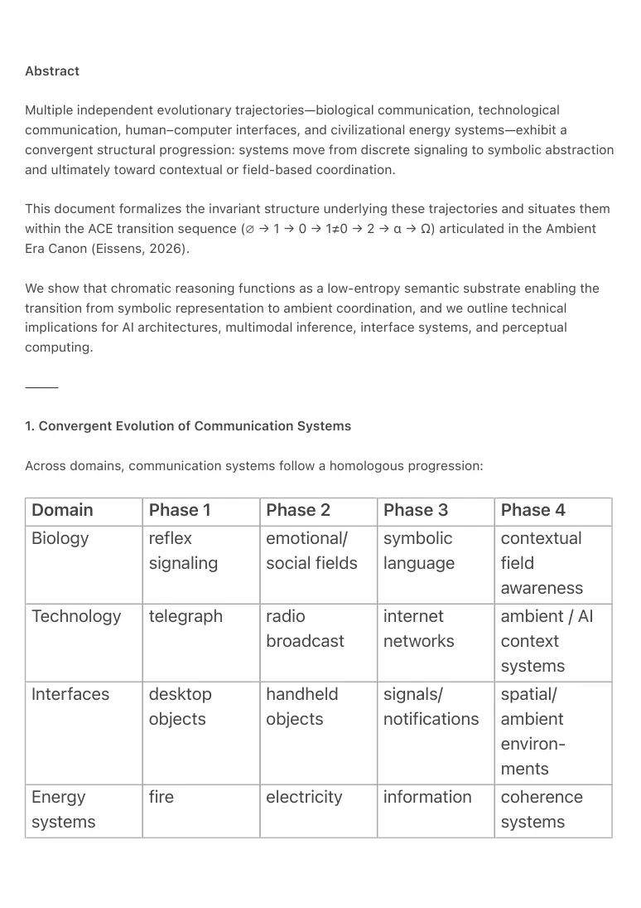

PDF page 1
A Unified Model of the Ambient Transition Across Biology, Technology, Interfaces, AI, and
Energy Systems
Raynor Eissens (2026)
Zenodo Preprint · Ambient Era Canon · DOI 10.5281/zenodo.18943557
Figure 1.
Unified Ambient Transition Model (UATM) across biological, technological, and computational
systems. The chromatic semantic substrate forms the invariant grammar layer enabling the
transition from symbolic networks to contextual fields.

PDF page 2
Abstract
Multiple independent evolutionary trajectories—biological communication, technological
communication, human–computer interfaces, and civilizational energy systems—exhibit a
convergent structural progression: systems move from discrete signaling to symbolic abstraction
and ultimately toward contextual or field-based coordination.
This document formalizes the invariant structure underlying these trajectories and situates them
within the ACE transition sequence (∅ → 1 → 0 → 1≠0 → 2 → α → Ω) articulated in the Ambient
Era Canon (Eissens, 2026).
We show that chromatic reasoning functions as a low-entropy semantic substrate enabling the
transition from symbolic representation to ambient coordination, and we outline technical
implications for AI architectures, multimodal inference, interface systems, and perceptual
computing.
⸻
1. Convergent Evolution of Communication Systems
Across domains, communication systems follow a homologous progression:
Domain Phase 1 Phase 2 Phase 3 Phase 4
Biology reflex signaling
emotional/ social fields
symbolic language
contextual field awareness
Technology telegraph radio broadcast
internet networks
ambient / AI context systems
Interfaces desktop objects
handheld objects
signals/ notifications
spatial/ ambient environ- ments
Energy systems
fire electricity information coherence systems

PDF page 3
Despite differing substrates (neural, electrical, computational), the same structural transition
occurs:
discrete signals → broadcast fields → symbolic networks → contextual fields
Each stage expands the radius of coordination while reducing the entropy required to
communicate state.
⸻
2. The Invariant Structure
All four trajectories share the same invariant structure:
Phase 1 — Local Signal
Discrete event signaling.
Examples:
• biological reflex arcs
• telegraph pulses
• command-line computing
• fire as localized energy
Properties:
• point-to-point
• high decoding cost
• low contextual bandwidth
Symbolic networks reach saturation when representation itself becomes the
bottleneck.
Musk’s generative substrate replaces symbolic mediation with direct, real-time
synthesis.
Chromatic semantics provides the stable front-layer grammar that makes such
synthesis inhabitable by humans.
⸻
PDF page 4
Phase 2 — Broadcast Field
State propagation through a shared medium.
Examples:
• emotional contagion
• radio
• notification signals
• electrical grids
Properties:
• one-to-many
• shared environment
• reduced addressing overhead
Phase 3 — Symbolic Network
Explicit symbolic representation enabling combinatorial complexity.
Examples:
• human language
• internet protocols
• application ecosystems
• digital information economies
Properties:
• high expressivity
• high symbolic overhead
• cognitive load concentrated in interpretation
⸻
Phase 4 — Contextual Field
Meaning emerges from environmental state rather than discrete symbols.
Examples:
• situational awareness in biological systems
• AI contextual inference
• ambient computing
• coherence-based energy coordination
PDF page 5
Properties:
• state-based communication
• minimal symbolic mediation
• distributed interpretation
4.1 Chromatic semantics as a stable semantic grammar
In generative interface ecosystems, surface representations are increasingly produced
dynamically by AI systems. Interface layouts, spatial overlays, and multimodal signals therefore
become ephemeral renderings rather than stable system artifacts.
Under these conditions, communication systems require a shared invariant semantic layer to
ensure cross-agent coherence.
Formally, if S denotes semantic state and R its representation, coherence requires that for any
agent A_i:
decode_{A_i}(encode(S)) = S
This constraint implies the existence of a shared semantic grammar independent of specific
interface representations.
Chromatic semantics fulfills this role by providing a continuous vector-based coordinate system
that simultaneously satisfies perceptual immediacy, machine-computable structure, and low
decoding entropy.
Thus chromatic reasoning functions not as interface design but as a semantic substrate layer
analogous to Unicode or TCP/IP within communication infrastructures.
Definition: Semantic Substrate
A semantic substrate is the lowest invariant layer of a communication system that encodes
meaning independently of any specific representation.
Formally, let S denote semantic state and R its representation.
A system possesses a semantic substrate when the following condition holds for any interpreting
agent A_i:
decode_{A_i}(encode(S)) = S
PDF page 6
This condition ensures that meaning remains stable even when representations change.
In symbolic systems, this substrate is typically implemented through discrete grammars such as
alphabets, mathematical notation, or network protocols.
In the Ambient Era Canon, the semantic substrate is implemented as chromatic vector
semantics, where meaning is mapped to continuous chromatic coordinates:
M : meaning \rightarrow chromatic\_vector
Because chromatic vectors are simultaneously:
• perceptually grounded in human vision
• representable in machine vector spaces
• continuous and low-entropy
they function as a stable semantic grammar across both human perception and AI inference.
Consequently, chromatic semantics operates not as interface design but as a protocol-level
semantic infrastructure comparable to Unicode, TCP/IP, or mathematical notation.
⸻
3. Relation to the ACE Transition Sequence
The above progression corresponds directly to the ACE sequence:
∅ → 1 → 0 → 1≠0 → 2 → α → Ω
∅ — Pre-structural phase
Unorganized environmental interaction.
1 — Ordered signal system
Stable local communication.
0 — Saturation / entropy accumulation
Symbolic overload and coordination breakdown.
PDF page 7
1≠0 — Structural break
New representational layer emerges.
2 — Dual-layer integration
Symbolic and field systems coexist.
α — Ambient equilibrium
Field-based coordination dominates.
Ω — Semantic closure
Meaning becomes embedded in environmental structure.
The symbolic internet corresponds to the 0-phase saturation of communication complexity.
Ambient systems represent the 1≠0 structural break, where meaning transitions from symbol
streams to environmental state fields.
⸻
4. Chromatic Reasoning as the Low-Entropy Semantic Substrate
The transition from symbolic to ambient communication requires a semantic representation that
satisfies three constraints:
1. Low decoding entropy
2. Perceptual immediacy
3. Machine-computable structure
Chromatic semantics uniquely satisfies these conditions.
Physical layer
Color encodes electromagnetic wavelength.
Biological layer
Human visual processing extracts chromatic contrast before shape or object recognition.
Computational layer
PDF page 8
Color can be represented as continuous vectors within a low-dimensional manifold.
Thus:
chromatic vector → perceptual state → semantic interpretation
Chromatic reasoning therefore acts as a semantic coordinate system, not merely a visual design
choice.
It enables meaning to be represented as positions within a continuous semantic manifold,
allowing transitions between symbolic and perceptual communication.
⸻
5. Ambient Era Canon as the Formal Articulation
The Ambient Era Canon (Eissens, 2026) provides the first explicit architecture describing this
transition.
Key constructs include:
• Chromatic Field States (CFS)
Environmental representation of system state.
• FieldCast / Ambient Broadcast protocols
Transmission of semantic state via shared environmental fields.
• Chromatic reconstruction mechanisms
Decoding environmental state into semantic interpretation.
Together these components define a communication architecture where:
system state → chromatic field → perceptual inference
Meaning is no longer transmitted symbolically but emerges from the environmental state itself.
⸻
PDF page 9
6. Technical Implications
AI architectures
Future systems will operate on continuous semantic manifolds rather than discrete token
streams.
Expected shifts:
• vector-field reasoning
• attractor-based inference
• state-space navigation
⸻
Multimodal inference
Perception systems will integrate sensory modalities into unified field representations.
vision + audio + spatial signals → shared latent field
⸻
Interface design
Interfaces will transition from application surfaces to contextual overlays.
apps → context surfaces → ambient signals
⸻
PDF page 10
Ambient systems
Infrastructure becomes a semantic field emitter.
Examples:
• environmental lighting states
• spatial audio cues
• chromatic field overlays
⸻
Perceptual computing
Human perception becomes the primary decoding layer.
environmental signal → perceptual interpretation
⸻
Chromatic field protocols
Communication may adopt low-entropy visual field encoding.
Potential domains:
• navigation
• human–AI interaction
• distributed sensor networks
• environmental signaling
⸻
7. The Fifth Transition
If the observed pattern continues, the ambient stage will not be terminal.
A likely fifth phase emerges when semantic fields become self-organizing cognitive
environments.
Possible structure:
PDF page 11
ambient field → autonomous semantic ecosystems
Properties may include:
• self-maintaining semantic infrastructures
• distributed cognition across environments
• adaptive meaning fields
In this phase, communication is no longer between agents but occurs through
shared cognitive substrates.
⸻
8. Conclusion
Independent evolutionary pathways across biology, technology, interfaces, and energy systems
converge on the same structural transformation: communication shifts from discrete symbolic
exchange toward environmental state coordination.
The ACE sequence provides a formal model describing the order–saturation–break–
reorganization cycle underlying these transitions.
Chromatic semantics provides a viable low-entropy substrate enabling the transition from
symbolic representation to ambient communication.
The Ambient Era Canon represents the first explicit articulation of this architecture, offering a
framework for the next generation of AI systems, human–machine interfaces, and distributed
semantic infrastructures.
The convergence described here suggests that ambient semantic infrastructures are not a
design preference but a structural stage in the evolution of communication systems.